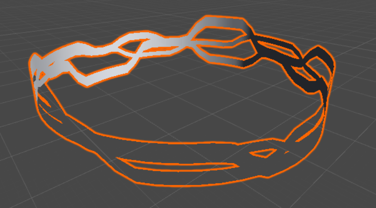
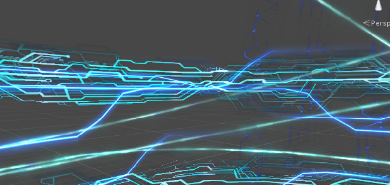

LL这个算是，出场率最高的抽奖程序（虽然一直觉得这个名字哪里不对hhhh）了吧w？ 15年社庆的时候开始用它，之后就一直有在用w。从缪用到了水（x），从没有SSR用到了有SSR（但是并没有实装SSR，也并没有实装水水）ww，也算是很…神奇了hhhh
每次用的时候都要换一下最开始的卡池图片www我的等级也从最开始的20多级（太咸了）到了现在的120级（还是太咸了）hhhh真是ww
但是本体的质量嘛…www，惨不忍睹hhh，毕竟是最开始第一个做的东西ww？我想想它（它们ww）诞生的历史ww 嗯…好像是15年的社庆之前，手杖社长组（14级的社长组ww我狐弯东困笑x）在讨论15年社庆的时候ww， 弯先森跟我说“能不能做一个模仿LL和舰娘的抽奖w？”（好像是这样吧w？虽然可能报道出现了偏差hhh） 当时想了想觉得：“嗯！好有趣ww”，就答应下来了ww。然后就先做好了LL的这一个ww（并咕了舰C，直到社庆前夜肝爆x）大概是这样的吧www
（毕竟这里真的…emm…除了写点代码也没办法为这个社团贡献什么了www不像弯先森有能借到本部科会程度的能力， 也没有带排练程度的能力，也没有给别人化妆程度的能力，也没有画传单彩喷程度的能力wwww所以真的只是做了一点微小的工作啊hhhh
这里的话，代码入门就是从Flash开始的w，所以理所当然的用Flash做了LL的抽奖ww 不得不说…相性真的超级好ww！ 除了有点已经不适合这个时代了以外hhhh（只能做2D限定w）真的是非常好用啊！w所以没过几天就做出来了ww
然而本体十分丑陋（）11个信封掉下来竟然是在时间轴上并排排了11次w！就像是…有循环不用而把那段代码写了11遍一样的丑陋x， emm…不要在意这些细节hhhh
素材方面ww，尝试拆包但是失败了，KLab用了奇怪的加密方式所以没有办法拆到素材w。 所以基本上背景图都是拿截图PS改的，信封是从头用Flash（别吐槽为什么是Flash wwww： 那会我觉得PS好难用Flash做图好方便w，现在想想…hhhhhhh（虽然真的挺方便的就是有点邪教ww）） 画出来的ww R信封上那枚樱花纠结了好久——好在最后还是画出来了（这么弱的吗）w，然后在这个基础上做了信封打开的动画ww （UR信封大概是截图然后改的来的w？UR信封打开前和打开后的样子（一堆小东西的位置呀什么的ww）不一致， 当时还纠结了好久好像hhhh后来也没改x反正仔细看大概是看不出来的www）
那个抽卡之前信封盒跳跃的动画！真的是hhhhhhhh现在看www好简陋啊wwww 但是为了把有信封箱的背景P成单纯的背景也涂了好一阵www（x）
然后就是冒出抽奖数字的环节w，想着www把九个人的颜色加进去吧~~，然后就变成了现在的样子ww… 好像没什么特别好说的诶ww？嘛www
大概就是这样wwww做好了之后我发到了手杖组群里面ww。结果大家玩的好开心！hhh然后就是各种 “天哪我怎么把欧气都用在这上面了”“怎么办我好非”的声音wwwww真是好欢快呢hhhh
虽然毫无关系但是ww15年社庆当天ww，我还记得天特别的少有的是湛蓝的颜色w（那可是霾城帝都啊！） 一条线一样的云就这么划过头顶的天空，更要命的是在那片云的下方还挂着一颗闪亮的星星www真的是太美了x 那可是白天天还正蓝的时候，一颗星星如此闪耀的挂在云的下面，真的是ww忘不掉的景象呢www（毕竟是刚在一起的第4天嘛（逃）） 之后还下起了雨ww然后标配的雨过后出了彩虹ww真的是像梦一般美好的一天wwww 社庆结束之后， 科会里就一直在循环放着LL的ED「きっと青春が聞こえる」作为ED曲，坐在舞台上拍合影，大家一起收拾会场什么的， 哇…真的是ww夢みたいwww
废话了好多hhh 下面是本体ww~
舰C也是用Flash做的www，由于舰C本体就是Flash所以这次拆包拆到了不少东西。 不过做起来更费时间了…毕竟本身就很复杂w，有好多增减资源的按钮hhhh好麻烦x（不是）
但我还是做了建造的时候小人搬砖的动画！！高速建造的时候也会喷出火的！ （虽然大多数情况下都被卡没了x我还是太弱了hhhh）（根本就没人在意这个好吗hhhhhhh）
当时在哪里都没有找到舰C里面铁底，金底，彩底的图片…所以当时实际上最后用的是特别特别残念的纯色 / 彩虹渐变， 实在是，太难看了ww（x）如果有去过15社庆的选手们的话大概都记得那特别残念的图吧ww哎ww对不起www（不过现在补上了ww
当时社庆前一晚大家在校外开了个格林豪泰一起准备ww，我就坐在那边戴上耳机专心肝抽奖hhhh（妈耶）嗯…好神奇的景象www
还趁此被拉入了舰C坑…然而我并没在坑里呆太久orz（土下座
（不过这抽奖就用了一次诶ww…虽然它确实有点丑hhh
（Flash不知道怎么回事颜色显示上全都乱套了orz导致好多奇怪的颜色（过于淡或者过于浓w？），也…懒得改了w
以下本体www~（只有工厂 -> 建造 -> 大型舰建造能点w
自从做了那两个抽奖之后，好像…大家就用这种迷之抽奖用上瘾了ww LL用了大概两年吧（虽然也不是全勤w），每次还象征性的换下卡池图（说过了！x）。于是到了17年，贝（？）还是弯师傅（？）（对不起我记不太清了ww）找到我说能不能做一个es的抽奖ww。那年拉到了氪元素的赞助（好厉害orz），说想趁着这次写一个新的es抽奖器w（所以这个东西该怎么称呼啊ww抽奖器…听起来好奇怪hhh）。好像…我印象里，这也是当时拉赞助的时候说的条件0 0w？对不起记不太清楚啦xx那年我都…完全的咸鱼了hhhh虽然本来也没怎么参与过你社决策上的事情ww（本来我也不像（也不太想）会参与这种决策的人吗hhhh）（虽然其实这一次...出了一些乱七八糟的事情www不过还是很赞的www
所以ww就写呗ww~。这次学聪明了，用了个循环把10次出卡动画包起来了（这不叫学聪明了这叫终于不zz了x）—— 很顺利的先做了个没有贴图的版本看一下动画效果是不是没问题w。到这里都没问题，但是接下来…由于es我并不会…拆包，所以图就只能自己画啦 —— 虽然好歹标题卡池图还是可以直接截图的ww。剩下的…比如3星卡的背景，为了后面的那种…浮动的三角形（？）去搜了QQ登陆界面的特效ww竟然真的有人研究这个怎么做啊hhhh然后找到张图改了改放了进来。嗯然后那堆四角星（x）对齐对的眼要瞎了hhhhh
然后就是最终画面的卡面背景也是从头开始一点点做的ww
嗯…很标准x没什么好说的x（实在是太难看了orz
（顺便ww当时做完了发现好像从远处看“一等奖”和“二等奖”太像了，怕到时候staff们看错然后记错大家的奖品，所以在一等奖下面加了一颗星星作为区分。不过…似乎并没有派上用场hhhh
然后呢www就是卡面了ww。果然只出数字什么的很没意思吧w？正好当时社里也有好几张檐娘了ww所以就问了问可不可以当作抽出来的卡面ww——于是就变成了檐娘限定卡池。嗯，就是从去年的es开始的ww。es抽卡抽出来的时候不是还有一句台词嘛www我就…特别神经的还给每张卡设计了台词hhhh（当时贝画的传单上的三只分别是事务组 / cos组 / 创作组的檐娘变成了…白白的三角关系hhhh（？？？）虽然ww完全根本从头到脚都彻底不重要的事情呢wwwwwww
看到檐娘们一张张的被抽出来（？）的时候ww真的突然就有种…这个社团已经变得这么厉害了呀ww的感觉www怎么说呢…触触好多呀www！非要说的话就是这种感觉吧ww
然后ww就很开心的也给她们随机了各种数值ww大概就是这样hhh
4/5星的卡面不是有背景嘛ww所以找贝（完了真的记不清了x我找谁要的w？）要了几张锤雷的风景照ww（当时完全不知道这是夜莺的图x嘛这是后话了xx（你们都是美少女.jpg））随便模糊了一下就放到背景里了ww虽然很微妙但是…嗯…果然还是就这样吧wwww
开场动画ww录了一段视频放了进去。嗯ww能偷懒为什么不偷懒呢ww
顺便ww17年的社庆…要说的话果然还是很开心吧wwww超开心的www（第一次以这样的姿态ww虽然…一点都不可爱TAT）谢谢大家以及弯困笑的妆wwwww唔但是果然xx遗憾也有好多ww但是ww嘛ww这样就足够了吧www嗯ww（就比如我为什么这四年就不敢变成这个样子站在台上…x（不是（嘛xx说多了ww （就很羡慕你们呀ww能穿的那么可爱在台上又唱又跳的ww（跑
那么下面是本体ww~
卡面背景 - 夜莺夜影
卡图 - 狐酱 / bay / 海参 / Dragon_Axiom（男神学（zhu）姐（jiao）（x） / A-RESEN
然后www到了2018年…又有新的抽奖要做了hhhh，而且这次一下还是两个！而且这两个其中还有一个是…（划掉）（工作量真的太大了orz），而且！这次社庆我还去不了！（暴风哭泣）嘛xx
今年的话www有了喵酱（Misty，超可爱的了解一下（不））的帮助ww终于可以拆包提取到游戏本体里的资源了wwwww（啊我好菜x）。考虑到今年另一个抽奖（FGO）必须要用3D来实现，所以今年就…终于总算是抛弃了Flash（可喜可贺）转向了Unity（另一个原因也是…之前做ムム（史莱姆酱的绝赞大冒险！请…稍微期待一下ww（鸽子了解一下x）（划掉））的时候总算会用了Unity的时轴…嗯，虽然遍地的bug但是还是挺好用的ww）。虽然有了拆包资源…但是实际上能用到的也只有贴图而已，动画和代码没办法直接拿过来用。（而且scene层次结构也不知道怎么导出（x）虽然能导出fbx但是…根本不能用吧）所以依旧需要ww欢乐的ww对时间轴卡动画www，工作量大概等于2个es吧ww（1es = 1舰C = 2LL）
另外今年有狐酱一起做了www减少了一些负担（虽然…这也太多了x）ww hin开心wwww帮忙做了好多好看的图www（比如封面ww）还有今年新加入的配置文件的部分也是ww（可以改号码范围，中奖率之类的，方便staff们调ww）
别的好像也没什么啦ww卡面依旧是按着es的这一套来做ww。不过今年，随着去年好吃聚聚的巨好看的檐娘人设出来ww各种檐娘的形象也以“官绘”的方式出现了ww（wonder大角虫受我一拜.jpg）（天哪真的大家都太触了ww认识你们很荣幸.jpg）所以卡面也变得更加丰富了起来www
那么ww下面是本体ww
（对不起> <…网页上似乎Unity的WebGL Player没法正常播视频，导致出心绽之花那个部分直接黑屏了。。直接点掉就好ww以及中文不能正常显示…嘛orz www）
制作协力 - 狐酱
卡面背景 - 夜莺夜影
卡图 - wonder / 好吃 / bay / 海参 / Dragon_Axiom
大魔王FGO。怎么说呢…FGO的特效实在是，太复杂了…最开始完全没有信心能做的出来。再加上背景一直是动态的，我（太弱了）找不到办法用视频敷衍过去…。最开始悠连跟我说fgo的时候，我说“…只能试一试不保证…”—— 然后…因为看起来太难了，只是试了一下就觉得…哇大概真的没戏吧，就这么搁置了。然而…随着ddl的临近（大限将至！），大家又很想要fgo的抽奖ww所以…就硬着头皮做吧ww
最开始的时候，先把背景做好了。那几个电路板一样的旋转的环呀（魔术回路吧大概hhhh），中间那颗闪亮的大蓝星星什么的。然而…实在是太丑了，丑的我完全不相信能把它做出来（就是在这个时候搁置掉的）。在那个时候我还不会拆包（喵酱教我是后来的事了hhh），只是在网上找到了dalao拆包拆出来的资源（很有限），当时觉得根本不可能了，没戏了（x）（因为fgo里面有很多的3D特效，这堆特效一般建立在模型（网格）之类的基础上，而且还都是UV动画，自己做也不知道它的运动方式什么的，总是就是很难还原x）
后来会拆包了hhh，拆到了一些素材。但是由于我不知道怎么…拆追加下载的数据包，所以拆出来的东西十分有限…不过也够用了ww。拆到了几个模型文件，再回去看fgo抽卡的动画的时候就会突然想到“啊！原来这个模型是用在这里的啊！”，就这样一点点先拼成了一个雏形。
举个例子ww我觉得还挺有趣的hhh（就跟玩解谜游戏一样x）
有个电流的特效ww当时拆到这个模型的时候根本想不到它是干什么的ww 
结果突然发现这些电流才是它的正确打开方式www： 
然后呢ww慢慢的加粒子特效，加各种特技（简直光污染），一个个调它们的位置，启动时间，时间轴什么的hhh…嗯…然而最后的样子还是不好看。就这么改来改去…最后也算是改出来一个凑合能看的样子ww
实在是…太多了orz（虽然也有我都把他们拖到最后才做的锅x
由于各种光污染+这里恶劣的习惯，各种特效的render queue从3000排到了3005…好像也没什么稀奇的x嘛hhh
卡面一点点揭开的动画，和每张卡的外框（金银框ww？）啥的都单独写了shader ww（虽然这么说好像说不明白x
特效做好了之后ww就是把代码加上去ww让动画能够按照抽奖的结果播放的工作了www就顺利ww（没有受阻，但是量太大了…emm…嘛wwww总之ww真的做出来了诶ww
大概…就是这种感觉吧www
体感工作量大概www 1FGO = 5恋与制作人 = 10es = 20LL（真的准确吗hhh
算了ww说这些也没用hhhhh
那么以下是本体ww上面加了另一个摄像机（另一个机位ww？）的画面，可以看到这堆特效到底是怎么组合起来的hhhh就当是个小彩蛋吧www
以及5星彩圈飘羽毛的特效被我做成了飘枫叶www不过ww这也www太隐晦了233333
制作协力 - 狐酱
拆包支援 - 喵酱（Misty）
卡面背景 - 夜莺夜影
卡图 - wonder / 好吃 / bay / 海参 / Dragon_Axiom
一点...碎碎念ww？
感觉这4年在社团里也没做成过什么东西…ww唯一能拿来总结一下的就是这些抽奖了吧www...怎么说呢…看着大家留下了那么多的画呀，文呀，或者出过那么多节目呀，以那么可爱的样子在舞台上表现着自己呀（啊我就是很在意啊呜> <），什么的…就觉得果然自己什么都没有…的感觉ww 说要做游戏，结果4年了不还是什么都做不出来www...嗯…嘛ww
看到创作组现在的手书也觉得，哇www大家变得好强都能做出这么厉害的东西了，就…也很想参与一下hhhhhh（然而已经是老妖怪了www）嘛xx（> <
总之就是www觉得…什么都没有留下一样ww不像画呀，曲子呀，文呀什么的那些…怎么说呢…虽然这么说可能不太好，一个人也能做得到的事情w？果然做game的话…一个人单刷还是太难了…w虽然其实是因为hhhh行动完全跟不上想法到最后就变成天坑了ww嘛ww
唔…也不知道我到底是想说些什么了www非要说的话www超羡慕你们这些触触啊ww超羡慕你们这些吃可爱长大的人啊ww如果可以的话也想让…我这个（？？？）（可能会引起不适x）只活在自己的梦里的女孩子也留下点什么…w文字也好，game也好，这样的话会开心一点…www？的感觉吧ww有种“啊~来到了这个世界和大家一起玩了呢”的感觉（妈呀什么鬼）哎算了我…为什么要在这里说这个hhhhh
那么ww以上www是一条咸鱼的总结www（谁让你总结了啊喂ww
现在的坑 -